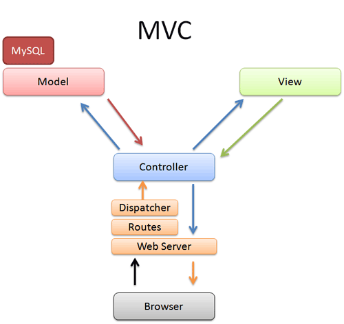

Rails is a web development framework that is written in the Ruby language. The benefits of using this framework is that it greatly speeds up web development from prototyping to deployment. The Rails sets up conventions that enable developers to implement a RESTful software architectural design. Rails also creates a Agile approach to software development.
One of the major conventions of Rails is creation of default directories for web applications. In this cheat-sheet we will be focusing on the App directory. The App directory holds the Model-View-Controller subdirectories.
Here are brief descriptions of the App directory and its subdiresctories (taken directly from this tutorial):